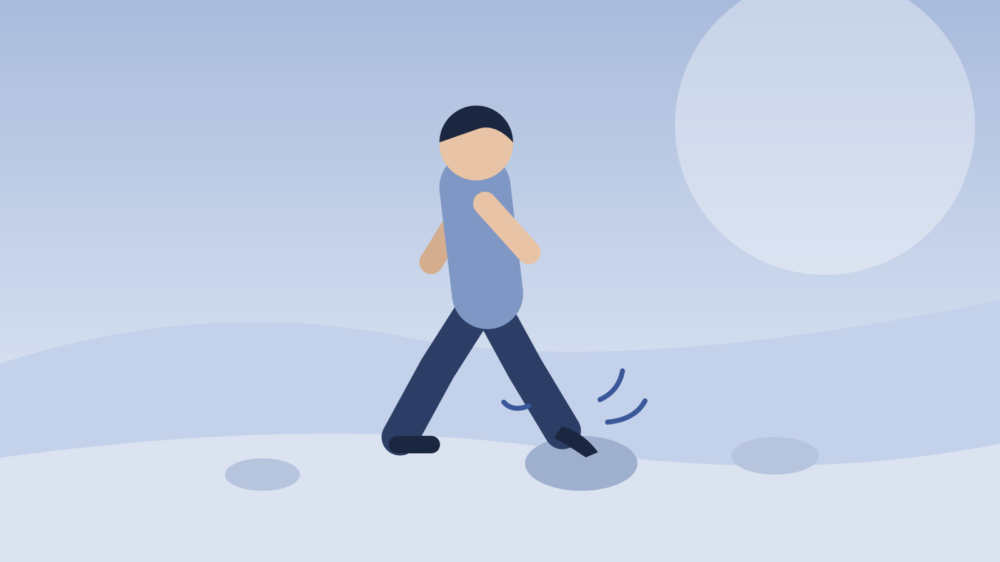

最新文章腰痛
【椎間盤突出】一定要做手術嗎？三個常被忽略的事實
照完 MRI 發現椎間盤突出，是否一定要做手術？註冊物理治療師根據研究講解三個常被忽略的事實、保守治療包括甚麼，以及需要立即求醫的情況。
以淺白文字講解常見痛症及運動創傷，並附可在家進行的練習。

照完 MRI 發現椎間盤突出，是否一定要做手術？註冊物理治療師根據研究講解三個常被忽略的事實、保守治療包括甚麼，以及需要立即求醫的情況。



膝頭痛：跑步或行山後下樓梯時膝蓋前方疼痛，常見原因之一是髕股痛（膝蓋骨周圍疼痛）。註冊物理治療師講解成因、三個髖部及膝部訓練，以及需要求醫的情況。